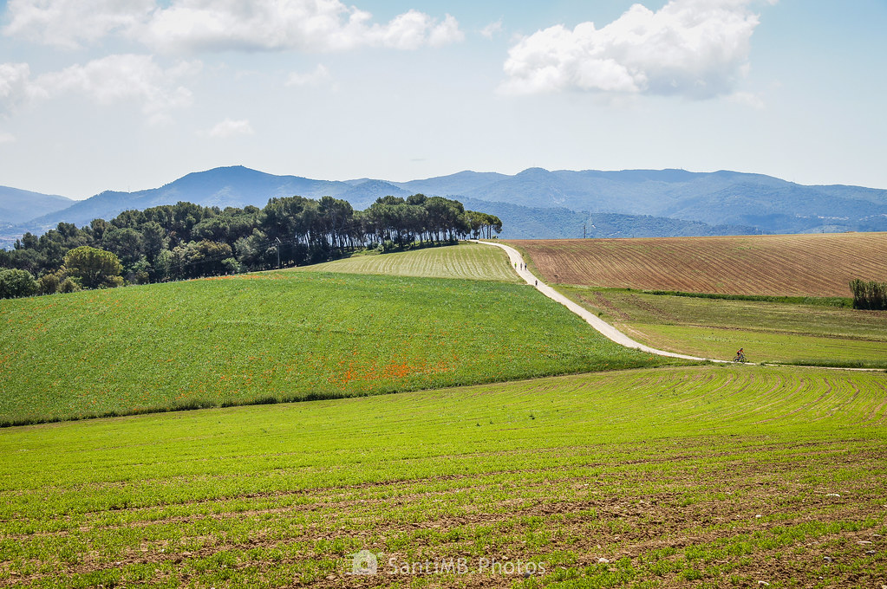
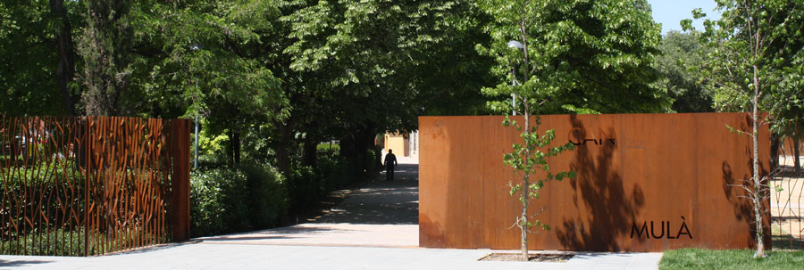
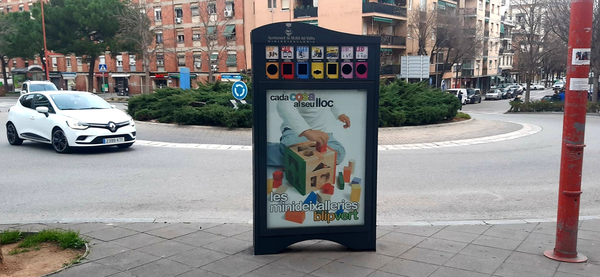
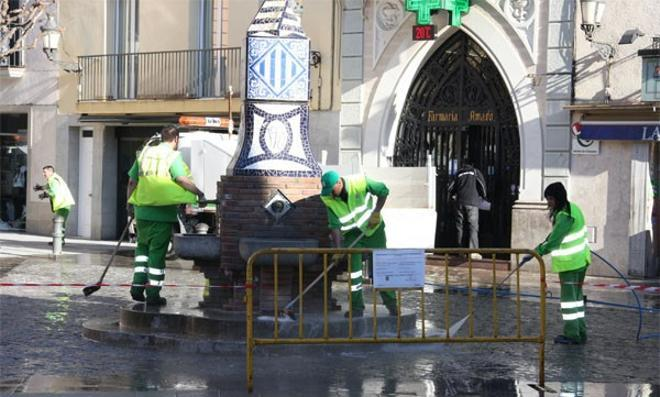
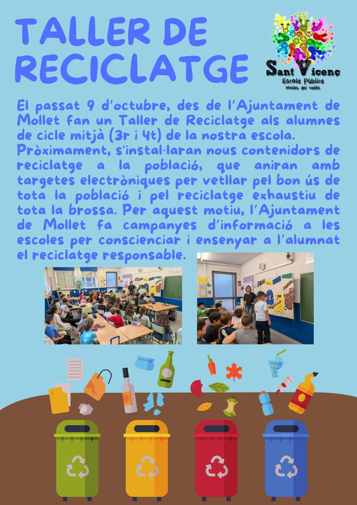

Ayuntamiento de Mollet del Vallès
Inicio
Contacto
Galería
Medidas
Consejos
UE y Agenda 2030
Paisajes Naturales

Espacio Natural de Gallecs, pulmón verde de Mollet del Vallès.

Parc de Can Mulà, espacio urbano sostenible.
Proyectos Ambientales Municipales
Instalación de paneles solares en edificios públicos.

Puntos de reciclaje distribuidos por la ciudad.
Eventos de Sostenibilidad

Jornada ciudadana de limpieza de espacios naturales.

Taller educativo de reciclaje para familias.